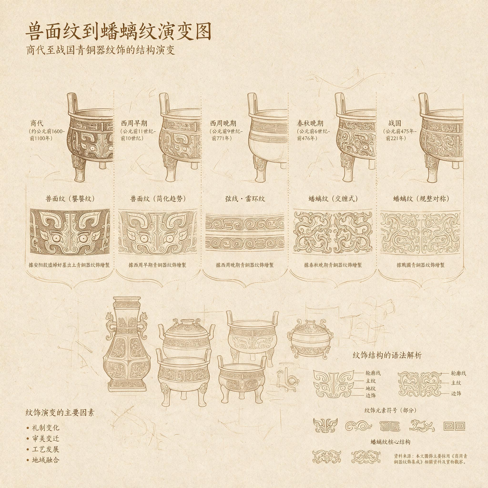

第 13 章
纹饰的语法
这套被我们比作“没有寄出的信”的水器，仍在原地等待解读；而想要读懂它，或许不能只盯着曾国一隅，还要把目光投向更早的时代。正如有学者在论及商代宗教时所指出的：“没有证据表明商代的宗教在本质上说是精神的或伦理的，而是如同苏美尔人和巴比伦人的宗教一样，其目的是祈求人类的繁荣昌盛。”
这话是美国学者菲利普·李·拉尔夫、爱德华·伯恩斯那拨人说的。列位听这话，别急着点头，也别急着摇头。他们不是在骂商代人没有信仰，而是在点破一层窗户纸：商代人跟神灵打交道，不是坐着谈玄，是拿着算盘谈买卖。求的是收成，求的是战功，求的是子孙活着、国家不塌。

商周青铜纹饰演变谱系
AI 生成插图，非史实影像。
这套买卖得有账本，账本写在哪儿？写在青铜器上。青铜器上的字，不是今天我们说的书法。那上面的饕餮、夔龙、云雷，就是账本里的符号。一笔一画，都有它的用项。饕餮正面瞪眼，那是主祭者在跟祖宗说话；云雷纹趴在地上，那是四方山川都来作证。这套符号用了一千多年，从商王宗庙用到周天子明堂，早成了固定语汇。
可语汇是死的，语法是活的。同样一个“饕餮”，排在中间和排在边上，意思差得远了去了。上一章我们说到那套水器像一封没有寄出的信，收信人是南方和北方的所有政治读者。信的内容没完全破译，那我们就换一条路，从信的笔迹入手。一个人写信，措辞可以斟酌，语气可以修饰，唯独笔迹不容易撒谎。
而从卜辞和传世文献来看，殷人普遍认为祖先神和自然神降下灾祸是由国君不修政德造成的——灾异不过是借口，纠正施政才是重心。拉尔夫和伯恩斯那拨人正是顺着这个逻辑往下推：商代宗教的目的不是精神的或伦理的，而是祈求人类的繁荣昌盛。
他们承认商代有重大祀典和发达的祖先神崇拜，却从来不承认商代属于神权政治，而是认为它更类似虽重视鬼神却依靠法典和现实主义来治国的古代两河流域。这套判断反过来理解也一样：求繁荣昌盛，必须通过一套严密程序来办。纹饰正是这套程序在器物上的外衣。
曾侯乙墓青铜器上的纹饰，就是这位诸侯留下的笔迹。乍看之下，还是商周那一套老词儿：饕餮、夔龙、云雷。这些母题在铜器上盘踞了上千年，眼睛都看出茧子了。
可你要是肯站近一点，再近一点，就发现这里的饕餮纹不再狰狞，夔龙的身子被拉得又细又长，几乎成了纯线条。更怪的是，云雷纹这个千年配角，这回反客为主，铺满整个器表，连个喘气的地方都不给你留。这就好比一个人练字，字形还是老字形，章法全改了。若不是刻意为之，不可能改得这么齐整。
这不是工匠的随意发挥，而是一套经过精心设计的视觉语法。要拆这套语法，不能从最大的鼎开始。鼎太大，站在跟前只看得出威严，看不出门道。
得从两件更精巧的东西入手。一件是尊盘，一件是建鼓座。这俩一个放在曾侯乙棺材旁边，一个立在乐器堆里，位置不同，用途不同，可它们身上的纹饰规则，像同一个师傅教出来的。先说尊盘。那东西上的蟠虺纹细得跟头发丝一样，层层叠叠，看久了眼晕。
但你要是拿个放大镜耐着性子走线，会发现每条蛇形线条盘曲的角度几乎处处控制在十五度以内。这不是随便说说。失蜡法铸铜，蜡模上每一道弯都得先靠人手盘出来。角度大了，蛇显得散；角度小了，线挤成一团。十五度，恰好是人眼能分辨“有序”和“杂乱”的那道门槛。曾国的工匠手头未必有量角器，但他们心里一定有这条线。他们知道，过了这条线，密集就变成混乱，满饰就变成糊涂账。
再看建鼓座。八对十六条龙相互缠绕，初看像一堆铜藤纠结成球。可你顺着任意一条龙的脊线一路走，会发现它从龙头到龙尾始终跟着同一个曲率，拐多少个弯都不带变的。十六条龙各自独立，又彼此平行，谁也别想压谁一头。这种效果，不是野蛮生长能长出来的。能做出这活儿的工匠，脑子里必然先有图样，甚至可能在地上画过等比例的稿子。
曾侯乙墓的青铜纹饰，从尊盘到建鼓座，从酒器到乐器底座，全都在干同一件事：密集、均匀、全覆盖。干得多了，学者们给它起了个名字，叫“满饰”。满饰不是曾国的发明。
楚人早就这么干了，而且干得更野。楚国的满饰，像南方的藤蔓，不知从哪儿冒出来，朝哪儿长，全没个准。线条会突然跳出来，会交错，会缠成一个看着就解不开的死结。楚器让你觉得那不是铸出来的，是长出来的。
可曾国的满饰不一样。它密，密得像棋盘上的棋子，可每一颗都落在预定的格子里。
有人打了个比方：楚式满饰是藤蔓，曾式满饰是算筹。藤蔓有自己的意志，算筹只服从排列者。
列位，这话说到根子上了。排列者是谁？是曾侯乙，是曾国宫廷，是整个曾国政治体。他们为什么要当这个排列者？为什么不干脆放开手，让纹饰像楚人那样痛痛快快长一场？
近年有一种解释很流行，说曾侯乙墓的东西，主要是曾国对楚文化的实用主义模仿和资源炫耀。理由是曾国在春秋中期以后被楚国压得抬不起头，政治上依附，文化上自然跟着跑。这说法有它合理的部分。曾侯乙墓里的楚式器、楚式纹样确实不少，尤其漆木器那一摊，几乎是楚风全面占领。
可要把青铜纹饰也归进“模仿楚风”这个筐里，就解释不了刚才那个差别：为什么越是需要精密控制的失蜡法铸造，曾国工匠反而越要克制、越要均匀？为什么楚国人允许线条乱跑的时候，曾国却非要把每一道蟠虺纹的角度按在十五度以内？模仿者只学得像。只有竞争者才会学得不像。曾国恰恰是在这个“不像”上花了大力气。
这就得回到商周纹饰的老语法里去。商周铜器的传统语法，核心只有一条：主纹和底纹的等级关系。饕餮纹永远占视觉中心，云雷纹只能填空隙。这个关系跟宗法制是同构的。
谁是主，谁是次，谁是祖，谁是孙，位置不能乱。可曾侯乙墓的青铜器上，这个等级被打破了。
纹饰不再有明确的主次之分，密集、均匀、全覆盖。有些器物上你甚至找不到一个可以叫“正脸”的主体纹样，满眼都是蛇形、雷纹、变形龙纹相互咬合。传统语法里的“中心”被取消之后，取而代之的是一条新规矩：密度成了唯一的价值标准。这个变化，放在商周铜器传统内部看，已经够大了。
它意味着曾国工匠不再靠单元母题的对立来制造视觉效果，而是靠重复、排比、网格化来制造秩序感。可再把视野拉宽一点，拉到整个战国早期的长江中游，又会发现一件事：这种“密度即价值”的满饰，恰恰是楚式青铜器从春秋后期开始往四处扩散的视觉语言。换句话说，曾侯乙墓的铜器在词汇上还是周式的，在句法上却大量借用了楚式满饰策略。词汇是一回事，句法是另一回事。这就像一个人说话，用的还是中原雅言的词，可词和词的排列方式，越来越像淮水以南的人在说话了。
曾侯乙墓青铜器的纹饰，乍看之下是商周传统的延续——饕餮、夔龙、云雷，这些母题在青铜器上已经盘踞了上千年。这是词汇层面的判断，没错。
可在句法层面，我们却必须说：这里的饕餮纹不再狰狞，夔龙的身体被拉长到近乎抽象，云雷纹从底纹变成了主角，铺满整个器表。这种句法层面的变革，是曾国政治处境的视觉表达。它不能丢掉周式词汇，因为那关乎姬姓诸侯的身份合法性；它又不能不学楚式句法，因为那关乎在南方政治格局里的生存空间。
于是，词汇还是那个词汇，句法却悄悄换了。现在可以回答那个最强硬的反方解释了。有人说，曾侯乙墓的这些纹饰没多少深意，不过是工匠赶工期图省事、追流行，是战国早期区域文化趋同的自然结果。
这话最大的问题是，它把“自然趋同”想得太省力了。文化趋同从来不是水往低处流那样自然发生。它需要选择，需要取舍，需要有人拍板定规矩。曾侯乙墓里的满饰，若真是自然趋同、无意识模仿，那就该跟楚器一样，在局部出现线条的越界、缠绕、变异。
可曾器的满饰处处表现出一种反自然的克制。这种克制不是趋同的副产品，是设计的结果。
更关键的是，这种设计恰好对应着曾国在政治上的双重处境：既要向楚文化靠拢以换取生存空间，又要守住周礼传统以维持身份合法性。纹饰语法成了这种张力的视觉表达——用楚式的满饰策略，包装周式的秩序内核。列位且琢磨“包装”这俩字。包装不是虚伪，包装是一种劳动。包装者在每一道纹路里都做了一个决定：这个角度再多一分就像楚国了，得收回来；
这个密度再松一分就像老周器了，得加上去。每一个这样的决定，都是一次微小的政治判断。几千个微小判断叠加起来，就构成了曾国独有的视觉语法。它不在任何一个中心上标榜正统，而是让自己整体上看起来“既不太周，也不太楚”。这恰恰是曾侯乙一生政治姿态的写照：既不能太周，太周了南方的楚国不放心；也不能太楚，太楚了北方的周室失望。一个在夹缝里求活的诸侯，连纹饰都得长成一条夹缝。
这种“不太周也不太楚”的纹饰语法，就是全书一直在追踪的那个概念在视觉层面的展开。文化防御工事，这五个字听着像军事术语，可放在曾侯乙墓的器物上，再贴切不过。工事不是城墙本身，也不是壕沟本身，而是城墙、壕沟、望楼共同组成的一整套防御体系。它的目的不是把自己包死，而是把来犯者的节奏打乱，让对方撞上来的时候找不到一个容易突破的平面。
曾国的文化防御工事也是这样。它的青铜纹饰不是一道硬屏障，不是把楚式纹样挡在门外，而是把楚式句法放进来，再用周式秩序把来客的节奏打乱。
楚文化要渗透进来，可以，但必须按照曾国的语法来排列。真正的楚式纹样被接纳的同时，也被改造了。看青铜器的人，既能看到楚风，又不会把曾侯乙墓错认成一座楚墓。
纹饰不是装饰，是编码。每一道蟠虺纹的弧度、每一组云雷纹的密度，都是曾国贵族在文化夹缝中写下的生存密码。
可编码有个特性：只有让对方看得懂，才算数。这就逼着曾国工匠不能把纹饰做成只有自己人能读的暗号。必须让楚国人看了觉得亲近，让周室使臣看了又觉得熟悉。于是，饕餮还在，夔龙还在，云雷还在，这是北方来使能认出的部分；而满饰、密集、覆盖，这是南方邻居能感到亲近的部分。
一套纹饰，同时向两个方向发信号。这才是曾侯乙墓最精致的政治手艺。它甚至比铭文更隐蔽。铭文要写字，写字就得选边站。铭文里刻楚国赠器，那是明确的政治姿态；铭文里刻曾侯乙自作器，那也是明确的主权宣示。可纹饰不写字。纹饰在写字之前就开始说话了。它比铭文更早、更底层，更不容易被察觉。
一个人看铜器，往往是先被满身纹路吸引，然后才想到去读铭文。纹饰在观者的眼睛和器物的身体之间建了一条通道，这条通道绕过了文字的检查站。它不直接告诉你曾国效忠谁，但它在不知不觉中让你接受了曾国“既在周旗下，又在楚风中”的混合气质。这就是视觉编码最厉害的地方：不争论，只呈现。
不过列位，我们说这个话，得防止把纹饰过度神秘化。曾国的工匠不是符号学家，曾侯乙也不是在下文化大棋。他们面对的是具体活计：铜料怎么分，蜡模怎么刻，器形怎么合范，纹样怎么保持清晰。那些十五度角的蟠虺纹，那些同曲率的建鼓座龙身，首先是一次次技术选择的结果。
可技术选择从来不是中性的。选这个角度不选那个角度，选这个密度不选那个密度，背后站着的是一代代工匠的师承、眼光和政治感觉。曾国的工匠们或许说不出“文化防御工事”这五个字，但他们的手，已经被这个政治体训练成了工事的建造者。这就要说回商周纹饰的老底子。商代宗教最讲究的就是秩序。
拉尔夫和伯恩斯说商代宗教的目的是求繁荣昌盛，这话反过来理解也一样：求繁荣昌盛，必须通过一套严密程序来办。纹饰正是这套程序在器物上的外衣。饕餮纹占据中心，意味着主祭者和祖先神之间有一条最直接的通道；云雷纹填充四周，意味着天地四方都在这条通道的控制范围里。
纹饰有主次，祭祀有等差，政治有亲疏——三套语法叠在一起，就是商周铜器最稳定的视觉秩序。曾侯乙墓的纹饰变革，根本矛盾也在这里。它保留了商周纹饰的词汇，却打乱了商周纹饰的句法。
满饰风格取消主纹与底纹的等级关系，让饕餮不再突出，云雷不再陪衬。这不只是审美问题。取消了主纹，就等于取消了视觉上的中心；取消了视觉上的中心，就等于在纹样世界里瓦解了一种可以明确辨认的等级。而等级，恰恰是周礼最核心的语法。
曾侯乙既然还要标榜周礼正统，为什么允许自己青铜器上出现这种瓦解等级的表现？答案不在铜器里，在铜器的使用场合里。
曾侯乙墓的青铜器，绝大部分不是为宗庙大典准备的祭器，而是为曾侯乙个人来世生活准备的随葬器。它们的首要功能不是在庙堂上展演周礼，而是在椁室里陪伴主人。
这个差别非常关键。铜器离开庙堂进入墓葬，纹饰语法也随之松动。庙堂上，饕餮必须居于中心，因为祭祀程序的每个环节都在强化主祭者的权威。可到了地下，曾侯乙不再需要面对活着的宾客，他面对的是另一个世界的祖先神、自然神，以及那个可能仍在注视他的南方楚国。在这个新场合里，满饰的密集和均匀反而更有效：它可以同时满足两种不同诉求，不必在视觉上做出明确的主次裁决。
所以我们看到的是两套语法并存在同一个墓葬里。中室那套用于宴饮和仪式的器物，如上章说的鉴缶水器组合，上面还保留着不少周式主纹底纹结构，虽然已经松动。而东室墓主人身边那批器物，满饰风格最彻底。
空间上的区别，对应功能上的区别。中室是表演性的，是对外的，纹饰还装着客气；东室是私人性的，是对内的，纹饰露出了更真实的政治底色。
这个底色，就是曾侯乙不再愿意假装自己只属于周而与楚无关，也不再愿意彻底投楚放弃周统。东室尊盘上的蟠虺纹就是好例。
那件尊盘放在曾侯乙棺侧不远，器形是标准的周式组合，可纹饰几乎没有留一块空白——螭龙与蟠虺层层堆叠，龙身蛇体相互咬合，视觉上满得几乎失去喘息之处。这种满，与楚国铜器的满饰有亲缘关系，却又比楚器多了一道数学般的自律。它像一个人在楚国的浓雾里走了一圈，回来之后把雾做成衣裳，却给衣裳绣上了中原的方格。穿在身上，既保暖，又表明自己并没有被雾吞掉。
建鼓座上的龙群说的也是同一件事。鼓座本是周代雅乐编列的一部分，传统器形简单，可曾侯乙墓的建鼓座做了八对十六条龙，龙身相互缠绕成一个大铜球，把鼓柱咬在中间。十六条龙，没有一条敢擅自离队。它们的曲率一致，是因为只要有一条龙的弧度出现偏差，整个结构在铸造时就会崩坏。这里首先是工艺要求，可这个要求反过来又成了政治隐喻：十六个个体必须服从同一个曲率，才能构成一个承受重压的整体。
曾侯乙的宫廷，大约也奉行同样的逻辑。再看云雷纹。商周传统里它是底纹——小、密、重复，永远不抢主纹风头——可曾侯乙墓的云雷纹常常大面积铺开，在一些簋的盖面上甚至成了唯一可见的纹样。有人把这看成简化、省工。
其实恰恰相反。把云雷纹铺满整个平面，并且保持均匀细密，这在铸造上并不省工。商周时期的云雷纹底纹大多用拍印法，同一块模具可反复使用；而曾侯乙墓的满饰云雷纹，很多地方呈现明显的分段构图迹象，说明工匠按照器物弧度重新排布、逐段修正。这不是省工，这是在极费工的方案里再做精细控制。曾国的工坊愿意为这种“无处不覆盖”的面貌付出更高成本。
这笔账算的是政治账。满饰覆盖越彻底，器物表面越没有留白；没有留白，就没有地方安放传统的中心主纹；没有中心主纹，器物就不会被一眼定性为“周式”还是“楚式”。它变成了一种可辨识却不可归类的存在。这种不可归类，正是曾国的生存状态——它要让楚国看到自己身上有楚风，让周室看到自己身上有周器，却拒绝成为任何一方的完美样本。
满饰，就是这份拒绝的物化。于是，纹饰的语法不再是“主与次”“中心与边缘”的等级叙事，而变成了“密与疏”“覆盖与留白”的程度纠缠。在曾侯乙墓里，几乎没有真正的留白——所有铜器表面都被纹饰填满，连器盖内侧和器足底部都不放过。这种对留白的恐惧，从文化政治的角度看，其实是一种对“被归类”的恐惧。留白会暴露器物本来的器形，器形会暴露地域与时代的原型，原型会暴露政治归属。曾侯乙需要的是一种把归属藏起来的视觉风格。满饰恰好提供了这样的伪装：它让观者的眼睛被纹路吸走，来不及去辨识器形的纯正与否。
这当然不是曾侯乙一个人的发明。战国早期，整个南方青铜器世界都在经历一场满饰化进程——楚、蔡、吴、越，各有各的满法。曾国的满饰只是大潮中的变体。但变体之间的差异，才最见政治体的性格。楚国的满饰像一支没有指挥的乐队，每个乐手都尽力演奏，声音宏大而嘈杂；蔡国的满饰纤细、柔顺，偶有断裂，像下游的支流。
曾国的满饰带着一种不疾不徐的均匀，均匀里有一种明显的自我约束，仿佛背后有一双眼睛在盯着每条纹路的走向。这双眼睛不是君主的，也不是工头的，而是政治格局本身——曾国这个政治体已经活得够久，久到能把外部压力内化为手头的分寸感。
说到分寸感，我们再回尊盘。尊盘上的蟠虺纹，细处不到一毫米，盘曲之间几乎没有缝隙。制作时工匠要先把蜡条盘成蛇形，再一条一条贴到模上；贴的时候稍有不慎，蛇与蛇之间就会粘连，铸出来铜线就会模糊。
曾国的工匠显然有一整套成熟的防粘连工艺，不然无法保证如此密集的线条仍然清晰可辨。这个工艺本身不稀罕，稀罕的是规模——尊盘上至少有上千条极细蟠虺，彼此平行、盘曲交错，没有一处明显错位。没有严密的组织分工，没有标准化蜡条制作，没有成批熟练工操作，根本不可能完成。这种纹饰本身就是曾国权力组织能力在工艺现场的直接呈现。因此，说纹饰是编码，不只是说它传达文化立场，也是说它传达生产组织水平。
一地工艺能达到什么程度，背后是这支政治体是否有一支稳定工匠队伍，是否有足够资源投入，是否有制度保证工匠长期积累技术。在没有文字记录的情况下，纹饰的密度和精度就是测量这些问题的标尺。曾侯乙墓青铜器在纹饰上展现出的高密度、高均匀、高覆盖，正是曾国工坊体系成熟到一定程度的证据。一个政治上处处受制的诸侯国，工艺上居然维持如此高标——这本身就是一种不合作。它用铜器说话：你可以压我的边界，却压不住我的火候。
这种不合作又不同于公开反抗。曾国没有在铜器上铸任何对楚国不敬的铭文，也没有做一件明显反楚器形的重器；一切都被控制在“不越轨”的范围内。可恰恰在这个“不越轨”的内部，藏着海量精细工作——就像一个人在被划定的圈子里把每一寸地都耕种得异常精良。他不越界，但你也无法忽视这圈子里的产量。曾侯乙墓的纹饰，就是曾国人在这个文化圈子里耕种出来的最大一季。现在，把视线从单件器物移到铜器群整体。
曾侯乙墓出土青铜器数量大，品类多——从钟磬架到鼎簋尊盘鉴缶，再到兵器车马器——几乎涵盖一个诸侯宫廷需要的全部铜器类型。在这些品类各异的器物上，满饰风格并非铁板一块：有些器物满得彻底，有些还保留着大片素面和传统主纹。
这个选择不是任意的。凡是需要在仪式中展示给外人看的器物——中室的鼎簋组合——纹饰相对克制，部分鼎腹上还保留着清晰的饕餮正面；凡是放在曾侯乙私人生活区、不易被正式宾客看见的器物，纹饰则更激进，更接近楚式满饰。这种空间分布上的规律，再次说明纹饰的使用被纳入了一套刻意的安排。
有人或许会问：考古材料能支撑这么细致的空间解读吗？能。曾侯乙墓四室隔绝，中室与东室确有功能区分——中室主要放礼乐器具，是墓主在地下继续履行君礼的空间；东室放墓主棺木及贴身重器，是私人空间——这个判断是有据可查的。两个空间的器物在组合、大小、纹饰风格上都存在可辨识差异。这个差异与空间逻辑一致。
不需要替古人说出心事，只需指出一个可观察的规律：越靠近曾侯乙私人身体的空间，满饰风格越强；越远离的越弱。这个规律一经指出，纹饰的政治性便难以再用“自然趋同”来打发——自然趋同不会如此严格地服从空间位置。
更耐人寻味的是，这种服从空间位置的纹饰策略，与楚文化自身的空间表达正好相反。楚墓中满饰往往在前室或椁外甬道的器物上最盛——因为这些位置更需要向外人示威——而私人棺侧反而朴素。楚的满饰是外向的、中心化的，给人看的；曾的满饰是内向的、去中心化的，给自己人看的。
这个差异又回到了根本区别：楚国满饰在视觉上宣告一个强权的存在，曾国满饰在视觉上隐藏一个强权的影响。一个是官话，一个是私语。曾侯乙墓最聪明的做法，不是选择周式纹饰来抵抗楚式风潮——那样会显得不识时务；也不是全盘接受楚式纹饰——那样会丧失周统身份。它选择了最费力也最精致的一条路：用楚式满饰做底子，用周式秩序做骨架，再在细节处不断微调，使整个器物群呈现出一种楚风浓郁却又绝不失序的混合面貌。
路走通了，曾国便既能在楚国面前表现得足够南方化，又能在周天子的旧臣面前扛起姬姓大旗。文化防御工事这个概念，在这里得到最完整的视觉诠释。
现在该收束这一章了。收束之前，把论证再往前推一步：既然纹饰是一套视觉语法，那它有没有失效的地方？有。失效恰好发生在它最想隐藏的地方。
曾侯乙墓的漆木器，与青铜器同在一个椁室里，却在文化风格上呈现出几乎完全的楚风——从衣箱上的扶桑射日神话，到鸳鸯盒的楚式造型与工艺，漆木器没有伪装。这一方面因为漆木器本就不是传统周礼重器，不用承担正统身份的压力；另一方面也暴露了曾国日常生活层面的真实底色：越是靠近身体、靠近日常的器物，越难伪装。青铜器可以满饰成一块看不透的密码板，漆木器却像记性不好的邻人，把昨夜说过的梦话又复述了一遍。这就是纹饰语法的代价——编码越精密，边界就越清晰。青铜器用高密度视觉语言筑起工事，可偏偏在漆木器上留下缺口。
后人从这些缺口里看到的是一个真实的曾国：青铜重器上极力维持周统体面，日常漆木器上已浸润楚风习气。两种器物共处一室，就像同一个人白天的官服与夜里的睡袍——各说各话，又都属于同一个人。曾侯乙大概不会想到，两千多年后，人们恰恰从这具身边的差异里，看穿了他一生最辛苦的伪装。
纹饰的语法，终归是一部没有写完的手册：它写满了密与疏的规矩，却在“如何统一青铜与漆木”的问题上停住了笔。这个未完成，不是工匠的过失，是曾国的现实——曾国已经不可能在所有器物上维持同一种语法，因为当真实生活被楚风严重渗透时，任何统一语法都会变成自欺。制作者把所有定力都用在青铜器上，让它们去参加外部仪式，去面对南方的政治读者；漆木器则留给自己，带着那些连伪装都不愿伪装的楚地气息。这正是曾侯乙墓最动人的地方：它留下了一个文化防御工事的所有必要部件，也留下了这工事在日常生活内部必然出现的裂缝。纹饰可以编码，可以把楚式满饰的野火圈进周式秩序的方格。
可方格之外，那些未被编码的颜色和形状已经自行生长起来。曾侯乙把一大堆青铜铸成自己的政治签名，漆木器却像签名旁边无意留下的一枚指纹。签名可辨，指纹也是他自己的。后人在读这封没有寄出的信时，先被签名吸引，再顺着指纹摸到纸背。纸背很薄，薄到能看见写信人手心出汗的痕迹。信读到此处，政治计算仍然没有完全破开。真正让人驻足的，不是密码本身，而是这位写信人已经不能再写下去的那个瞬间。他留下了一个工事，也留下了工事脚下已经松动的泥土。